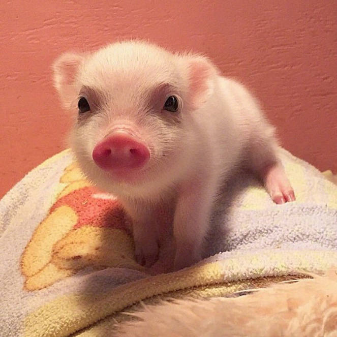

个人主页
项目内容：制作自己的网页，展示资料与作品，记录修改、测试与发布过程。
软件技术专业学生 · 前端开发学习者
广东科学技术职业学院 25大模型

HTML5、CSS3、JavaScript，正在学习 Git、数据库与网站部署。
在校学习
珠海
13750301493
广东省珠海市金湾区珠海大道南侧65号, 519090
我的学校 · 软件技术专业
学习网页开发，用项目记录成长。
蓝桥杯 · 数字建模大赛
参加蓝桥杯数字建模大赛，在备赛中锻炼数字建模、数据分析与团队协作能力。
项目内容：制作自己的网页，展示资料与作品，记录修改、测试与发布过程。
以下为教学示例，完成后可替换为自己的作品。
小猫跳一跳：按住蓄力，松开跳跃，落在平台中心有额外加分。
玩法：鼠标 / 手指按住蓄力，松开起跳；键盘可使用空格键。
纯 HTML5 Canvas + JavaScript 制作的网页小游戏，无需安装，打开即玩。